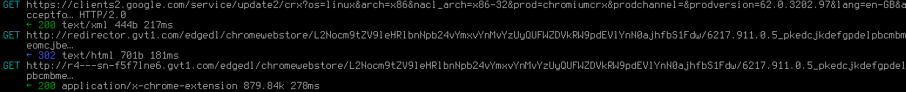
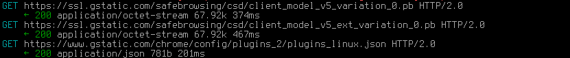
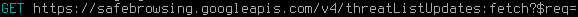

Vivaldi is a feature-full, customizable web browser made by some of Opera's old developers (since they were dissatisfied with the direction Opera was heading). But how does it look in terms of privacy? Versions 1.15 and 2.0 were tested to make this article. Program used for testing requests: Mitmproxy.
Vivaldi makes a bunch of requests to Google upon startup and after (malware protection requests can be turned off, but extension updates don't appear to?). Phones home every 24 hours with a unique ID using Piwik, an analytics service. Anti-privacy Bing as the default search engine. Not fully open source. Connects to an analytics platform that spies on its users.
Vivaldi connects to the analytics platform Piwik[1] that it uses to spy on its users, which is discussed in greater detail in other sections of this page. What is most notable about this is the additude of Vivaldi's developer team: Developers that belittle privacy concerns, and insult their users further when they speak out about being spied on, are not developers you can trust. Below is an anti-privacy rant from a moderator on Vivaldi's forums:
@dib_ Stop spreading FUD. Piwik as employed by Vivaldi is not "spyware." Piwik is not a "spyware company" (unless Google, Facebook, Yahoo, TVGuide, Microsoft, Apple, NYT, Huffpo, Ancestry.com, WaPo, CenturyLink and McAfee are "spyware companies" - in which case just disconnect your computer and go to bed). It is irresponsible and malicious of you to lie about Vivaldi in this fashion. If you want to know what a connection does, ask. But don't sling around reckless accusations.[2]

These are the Chrome webstore requests, supposed to update your extensions. But with a new Vivaldi install, you don't have any, so they only accomplish spying. And the first request includes "x-googleupdate-appid" which is most likely uniquely identifying. Can't be disabled.


Vivaldi is downloading the lists for Google's Malware and Phishing protection, which is enabled by default, but can be disabled from the Settings menu.
From Vivaldi's privacy policy: "When you install Vivaldi browser ('Vivaldi'), each installation profile is assigned a unique user ID that is stored on your computer. Vivaldi will send a message using HTTPS directly to our servers located in Iceland every 24 hours containing this ID, version, cpu architecture, screen resolution and time since last message. We anonymize the IP address of Vivaldi users by removing the last octet of the IP address from your Vivaldi client then we store the resolved approximate location after using a local geoip lookup. The purpose of this collection is to determine the total number of active users and their geographical distribution.". So they (claim to) delete "the last octet" of your IP. How generous of them. This is the full request:
The default search engine is Bing, whose privacy policy states: "Microsoft will collect the search or command terms you provide, along with your IP address, location, the unique identifiers contained in our cookies, the time and date of your search, and your browser configuration.". To make it worse, that data is shared with third parties: "We share some de-identified search query data, including voice queries, with selected third parties for research and development purposes." (you have no proof it has been "de-identified", by the way). Vivaldi has other engines preinstalled, and you can easily change it - but still, the default is all we can judge it by.
By default, Vivaldi contains some websites in its new tab page that have a lot of spyware in them, but does not automatically make any connection, and those sites can easily be deleted.
"However, it is only our Chromium work that is found on https://vivaldi.com/source. If you were to build it and run it, nothing will display as the HTML/CSS/JS UI is missing. This UI is only available as part of our end user packages, which is covered by the EULA (in which we also bundle with a compiled version of our modified Chromium)."[3]
1.
Get Matomo
[web.archive.org]
[archive.is]
2.
Return of Vivaldi spyware
[web.archive.org]
[archive.li]
3.
The Vivaldi source code license and the EULA appear to conflict with each other...
[web.archive.org]
[archive.li]
This article was last edited on 10/14/2018
This article was created on 11/25/2017
If you want to edit this article, or contribute your own article(s), contact us on XMPP over in spyware@conference.nuegia.net, or visit us at the git repo on Codeberg. All contributions must be liscenced under the CC0 liscence to be accepted.